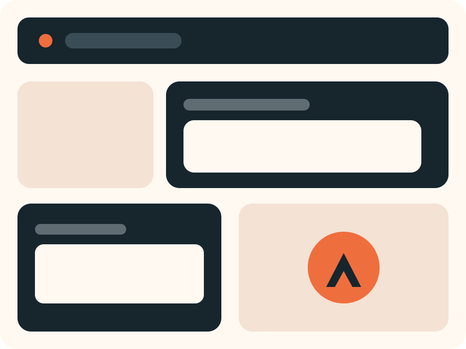

Student Innovation Hub
AI destekli urunleri daha hizli, daha guvenli yayina alin.
UI Auditor gibi kalite araclari ile kirik linkleri, gorsel hatalarini ve mobil duzen problemlerini ekip buyumeden once yakalayin.

Link Health
Critical landing pages are checked before launch.
Media Integrity
Missing logos, banners and thumbnails are flagged automatically.
Responsive QA
Mobile collisions and horizontal overflows are surfaced visually.
Intentional demo bug
One image below is intentionally broken.
This helps the audit tool prove that image failures are really captured.